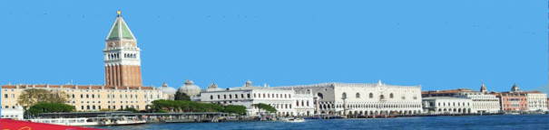

APPARTMENT SAN FRANCESCO
Calle de la Nunziatura
Sestiere Castello 2792, 3rd floor,
30422 Venezia

|  |
Micro Music Course with Kiki & Kuku
29. Jan. - 2. Feb. 2024
Venice, Italy
Music Course Aims
To rediscover and deepen the joy of life in music
Individual advice on technical skills in making music (from early music to improvisation)
Art of chamber music / jam session
Costs
Registration: 100,- €
Accommodation (subject to availability on a first notice first serve basis): €350 + tourist tax
Includes: a room Sunday 28.1. - Saturday 3.2. (6 nights)
To be paid only in cash directly at the apartment to the owner
Registration
The number of participants is limited.
Deadline (extended): 15th of November 2023
Please write an email to operamania[at]icloud.com
Registration is completed after receiving of payment of registration fee (100 €).
Schedule
The schedule and the music will be shaped according to individual wishes of the participants. (Please let me know your wishes / ideas in advance at your registration.)
Sunday:
12:00 - 20:00 Pick Up Service at Venezia Santa Lucia Train Station or Vaporetto Station Celestia or Ospedale and Walk through Venice to the Conference Location for Early Arrivals (please announce your time of arrival)
Monday:
10:30 welcome coffee time together
11:00-12:00 lesson [1a]
12:00-17:00 free time
17:00-18:00 lesson [1b]
Tuesday:
11:00-12:00 lesson [2a]
12:00-17:00 free time
17:00-18:00 lesson [2b]
Wednesday:
11:00-12:00 lesson [3a]
16:00 coffee time together & optional "Micro Home Concert at Florian"
Thursday:
11:00-12:00 lesson [4a]
12:00-17:00 free time
17:00-18:00 lesson [4b]
Friday:
11:00-12:00 lesson [5a]
12:00-16:00 free time
16:00 good-bye coffee time together
Accomodation Information
|
APPARTMENT SAN FRANCESCO |
|
|
One queen bed room or one twin bed room, two separate beds, with an option for a third small bed is available for participants and accompanying persons. |
The accommodation is in a traditional spacious Venetian style apartment located in an area of Venice outside the main touristic pathways. Yet, the attractions of Venice can be reached easily within short walking distance.
Directions and travel info:
Arriving by train at Venezia St. Lucia train station: You will find all necessary
information and maps under fahrkarten.bahn.de
Either a long walk or by Vaporetto ACTV, Line 5.2 to "Celestia" (circa 30 min.)
Arriving by plane at Venezia Airport: There is a boat service from Venice Airport to the historic center station "Ospedale" with Vaporetto blue line ."linea blu" (circa 45 min)
Organisation and Contact Information
Tomomi Okuno
OperaMania Project
Email: operamania{at}icloud.com
Web: www.operamania.de